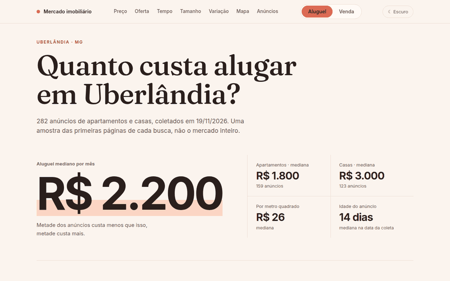
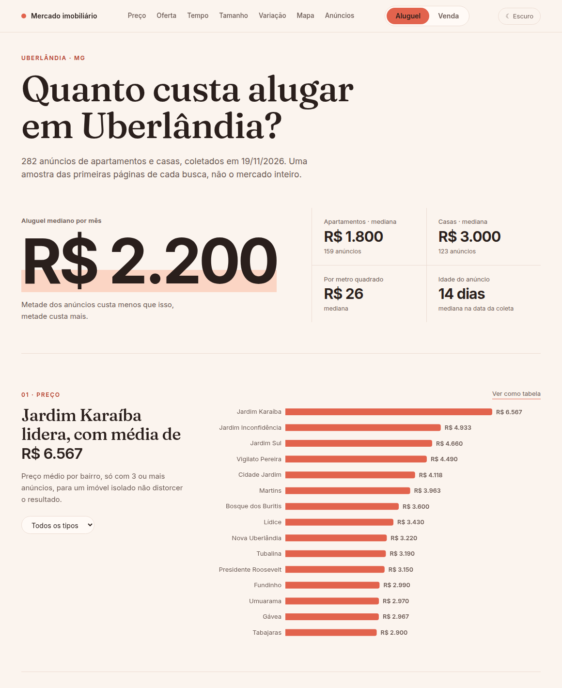
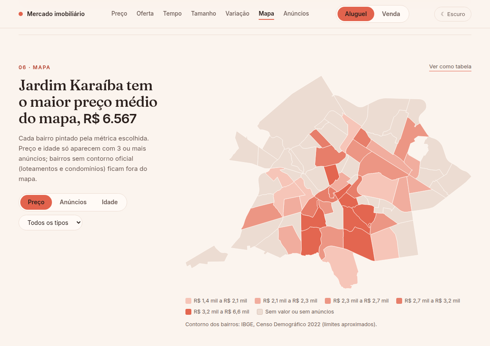
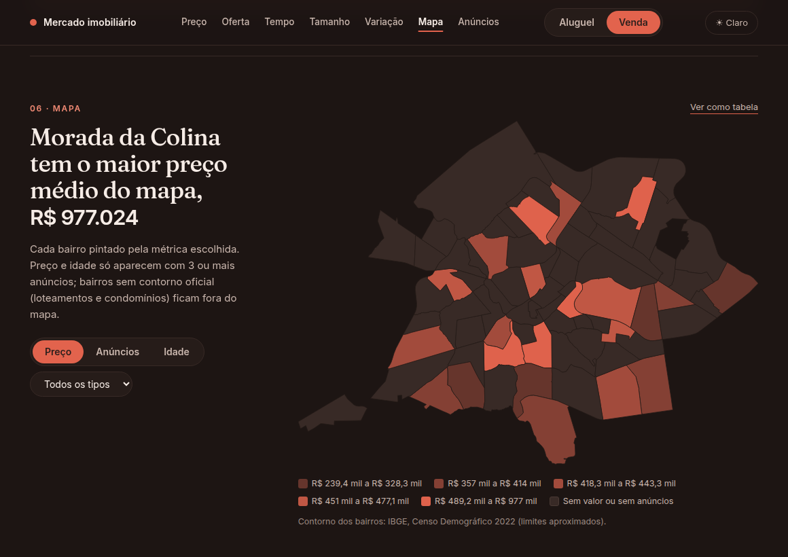
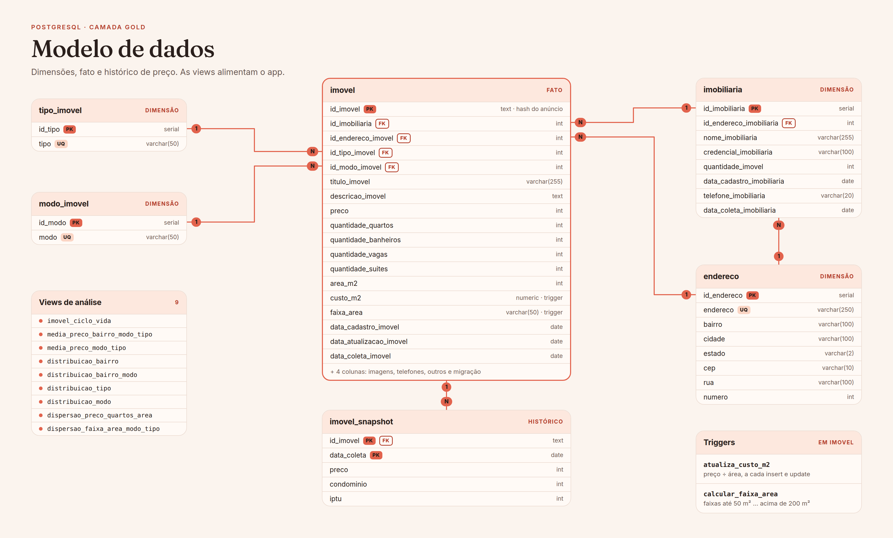
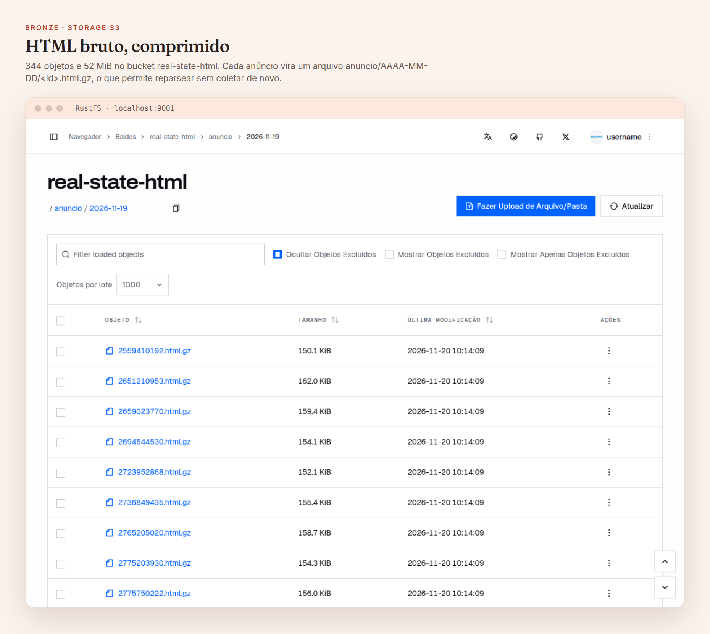
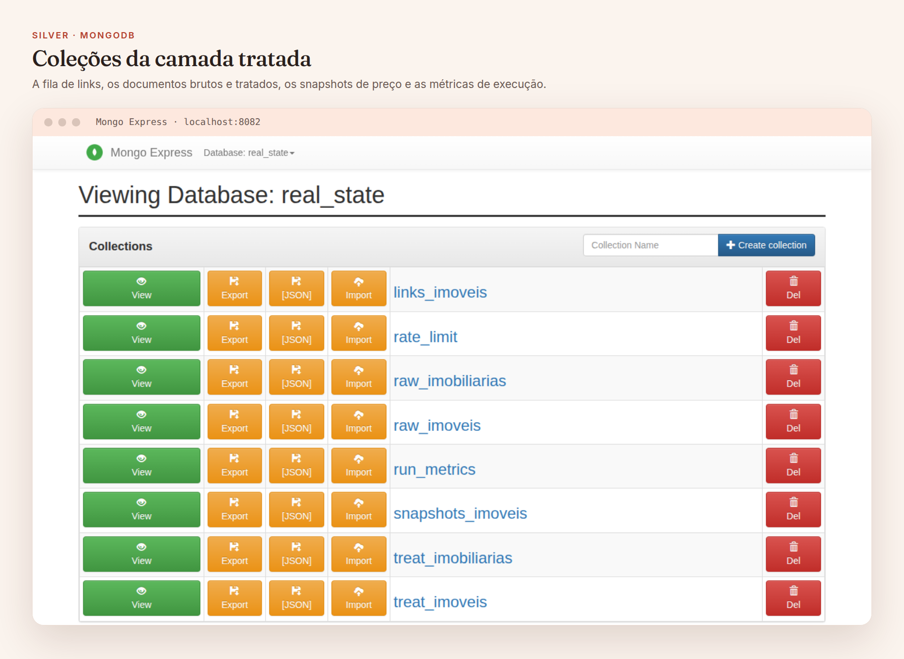
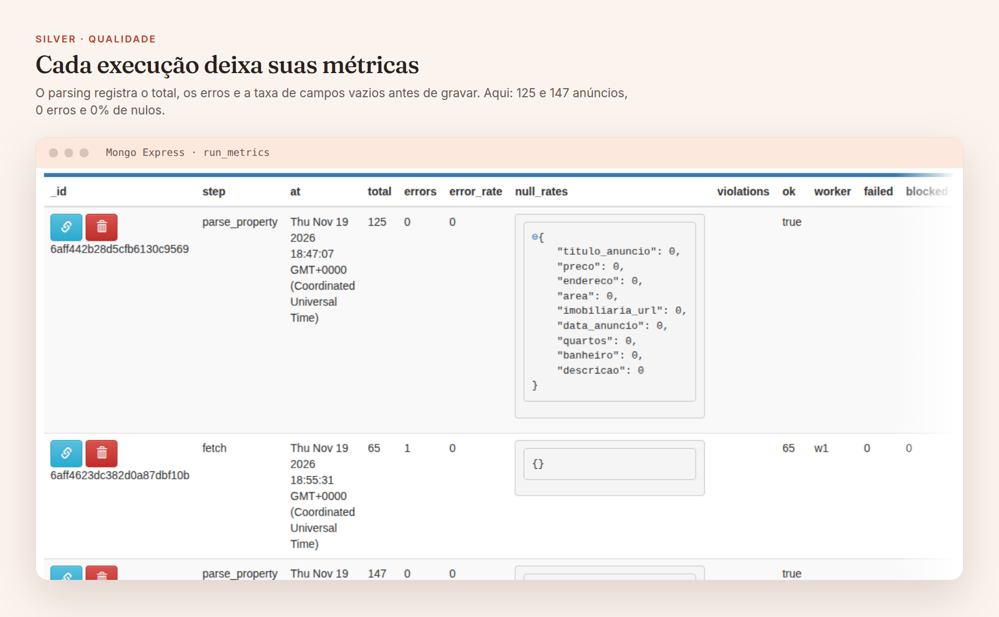
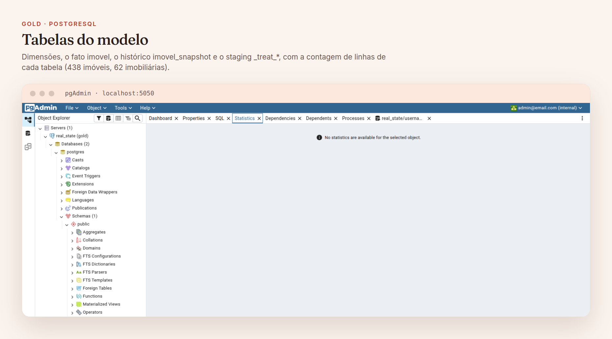
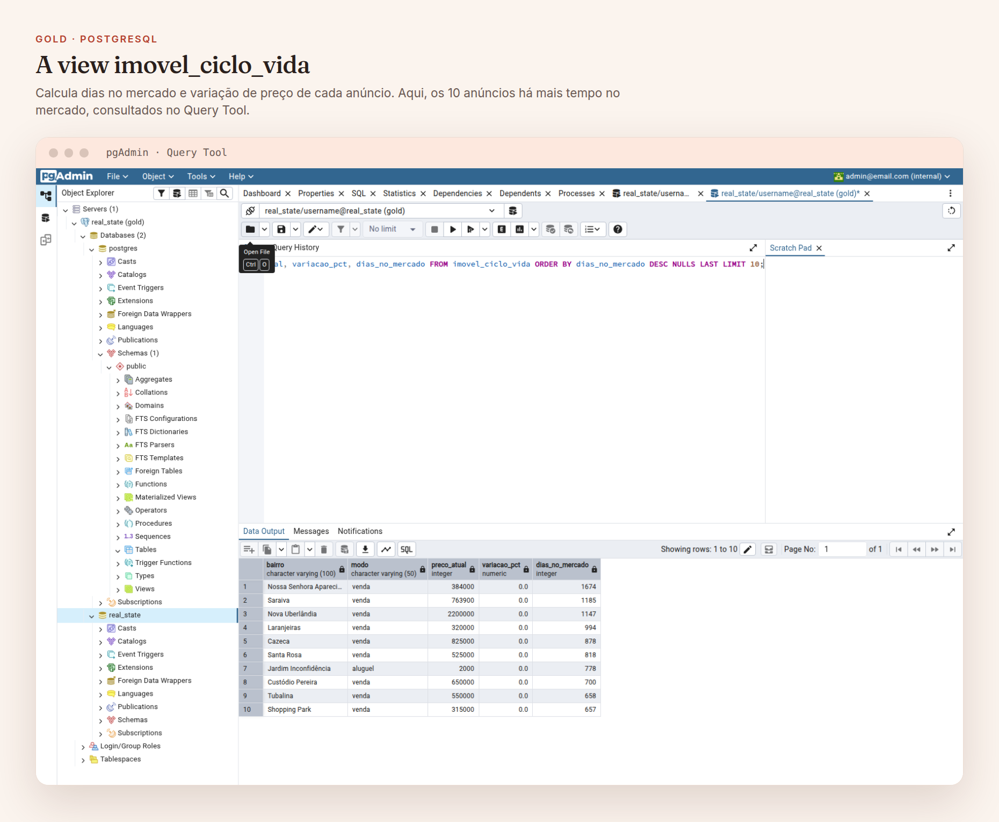

Contexto
Pipeline para acompanhar preços e características de imóveis anunciados em sites de imobiliárias de Uberlândia/MG. O projeto foca em três ideias: coletar em escala com responsabilidade, reprocessar sem recoletar e carregar de forma idempotente. O desafio central é o scraping, já que os sites variam em estrutura e usam proteção anti-bot (Cloudflare).
Fluxo da arquitetura
O Airflow orquestra o ciclo completo com DAGs em DockerOperator. O HTML bruto de cada página é guardado comprimido (bronze), parseado e tratado no MongoDB (silver) e carregado por upsert transacional no PostgreSQL (gold), de onde uma API Express alimenta o app React.
O que foi implementado
- Coleta paralela com limite global: workers compartilham uma fila com reserva atômica e um limitador de requisições (~0,8 anúncio/s no total), com retentativa e backoff exponencial
- Camada bruta reprocessável: o HTML de cada página fica comprimido em storage S3-compatível; se o site mudar, basta reparsear, sem coletar tudo de novo. Depois que o lote é carregado no Postgres o HTML é apagado, e o que falhou fica em quarentena
- Parsers testados: extração por JSON-LD e atributos
data-testid, com testes (pytest) sobre HTML de exemplo versionado - Carga idempotente e incremental: upsert em uma única transação no PostgreSQL; reexecutar não duplica nada e, se algo falha, nada é aplicado. Cada execução do tratamento é um lote, e a carga leva só os lotes ainda não carregados
- Histórico de preço e ciclo de vida: cada coleta gera um snapshot, permitindo medir variação de preço e tempo no mercado
- Orquestração com Airflow e alerta de falha, com tarefas mapeadas por worker
- Controle de qualidade: o parsing mede a taxa de campos vazios e de erros antes de gravar; se o parser quebrar, a execução falha sem gravar nada, e as métricas de cada etapa ficam registradas no MongoDB
- App web: API Express somente leitura sobre views do Postgres e frontend React com gráficos, mapa de Uberlândia colorido por bairro, tabela equivalente a cada gráfico, tema claro/escuro e listagem filtrável de aluguel e venda
- CI no GitHub Actions: lint com ruff, testes com Mongo e Postgres como serviços, build do frontend e da imagem de ETL
- Coleta responsável: ritmo limitado, sem contornar proteções do site e sem enviar dados fictícios a formulários
O app
Uma página editorial em vez de um painel de relatório: a manchete pergunta quanto custa alugar em Uberlândia? e responde com a mediana do aluguel, seguida de gráficos cujos títulos enunciam a conclusão. Um seletor fixo alterna entre aluguel e venda, e a escolha vai para a URL para que o link seja compartilhável.


Mapa por bairro
Uberlândia desenhada em SVG com d3-geo, sem mapa de fundo e sem depender de rede. Cada bairro é pintado por preço médio, quantidade de anúncios ou idade do anúncio. Bairros com menos de 3 anúncios ficam em cinza, em vez de mostrar uma média enganosa. O contorno vem da Malha de Bairros do Censo 2022 do IBGE, e 94,7% dos anúncios caem em um bairro com contorno.


Modelo de dados
Na camada gold, o PostgreSQL guarda as dimensões (tipo_imovel, modo_imovel, endereco, imobiliaria), o fato imovel, com triggers que calculam custo por m² e faixa de área, e o histórico imovel_snapshot. As views alimentam o app, incluindo imovel_ciclo_vida (primeira e última coleta, dias no mercado e variação de preço).

A arquitetura funcionando
Capturas das ferramentas do docker-compose.yml com os dados reais da coleta de 19/11/2026: o HTML bruto no console do RustFS (bronze), as coleções e as métricas de qualidade no Mongo Express (silver), e as tabelas e a view de ciclo de vida no pgAdmin (gold).





imovel_ciclo_vida no pgAdminResultados medidos
HTTP simples ou Selenium? A Cloudflare responde 403 a clientes HTTP simples (requests e httpx, 0/6 de sucesso), enquanto o Selenium em Chrome headless teve 6/6, com latência média de 1,87 s. Por isso o Selenium permanece.
Escala com workers: com 1 worker a taxa foi de 0,49 anúncio/s; com 2, 0,76; com 4, 0,75. Com 2 workers o teto global já é atingido, e mais workers só aumentam o uso de memória. Em relação à coleta serial original (~5 s por anúncio), a taxa é cerca de 3,8× maior, sem nenhum anúncio coletado duas vezes.
Os números do app vêm de uma amostra de 19/11/2026: 438 imóveis (282 de aluguel e 156 de venda) de 62 imobiliárias, com as 3 primeiras páginas de cada busca. Não representam o mercado inteiro.